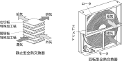
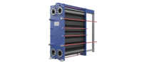
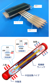

2026年
問題70 空気調和設備に用いられる熱交換器に関する次の記述のうち，最も不適当なものはどれか．
(1)代表的な空気冷却用熱交換器としては，プレートフィン型冷却コイルがある．
(2)プレート式の水−水熱交換器は，コンパクトで容易に分解洗浄できるという特徴がある．
(3)回転型全熱交換器は，仕切り板の伝熱性と透湿性により給排気間の全熱交換を行う．
(4)ヒートパイプは，構造・原理が単純で，熱輸送能力の高い熱交換器である．
(5)空気−空気熱交換器は，主に外気負荷の削減に用いられる．
2026年
問題70 正解（3） 頻出度AAA
仕切り板の伝熱性と透湿性により給排気間の全熱交換を行うのは，静止型全熱交換器である．回転型全熱交換器はエレメントの蓄熱性と吸湿性により全熱交換を行う（2026-70-1図参照）．
2026-70-1図 静止型全熱交換器と回転型全熱交換器

出典 社団法人日本冷凍空調工業会
https://www.jraia.or.jp/product/file/e-book_zennetsu_CO2.pdf を基に作成
全熱交換器の全熱とは顕熱＋潜熱を意味する．室内からの排気と導入外気との間で熱交換し，排気の顕熱，潜熱の回収を図る，空気対空気の熱交換器で省エネ機器である．エネルギー回収率は 60％程度のものが多く，これだけでは不十分なため，二次空調機に接続して使用する．
室内汚染物質が取り入れた外気側に漏えいしない構造，保守管理が必要とされる．
排気の顕熱，潜熱を一時的に蓄える素材は難燃紙にシリカゲルを含浸させたものや浸透性をもった加工紙などが使われているが，いずれにしても表面が油膜に覆われてはその機能を失ってしまうので，ちゅう房の排気などを通すのは不適当である．
寒冷地方における空調用換気からの排熱回収や，排気中に水分やミスト・ダストを多く含む工場排気，水分の回収を必要としないちゅう房や温水プールにおける熱回収には「顕熱交換器」が使用される．
-(1)プレートフィン型冷却コイル2026-70-2図参照．
2026-70-2図 プレートフィン型冷却コイル
-(2)プレート式の水−水熱交換器2026-70-3図参照．
2026-70-3図 プレート式熱交換器の例

出典 アルファ・ラバル株式会社
https://www.alfalaval.jp/
-(4)ヒートパイプ2026-70-4図参照．
2026-70-4図 ヒートパイプ

出典 株式会社フジクラ
https://www.fujikura.co.jp/news/pressrelease/20221026post_74.html
-(5) 空調設備の熱交換器には，冷風・温風，冷温水を得るためのものと，排熱（顕熱，潜熱）を回収して外気負荷の削減を目的とする空気-空気熱交換器がある．
冷風・温風，冷温水を得るための熱交換器は全て顕熱交換器となるが，排熱回収には，全熱交換器と顕熱交換器がある．